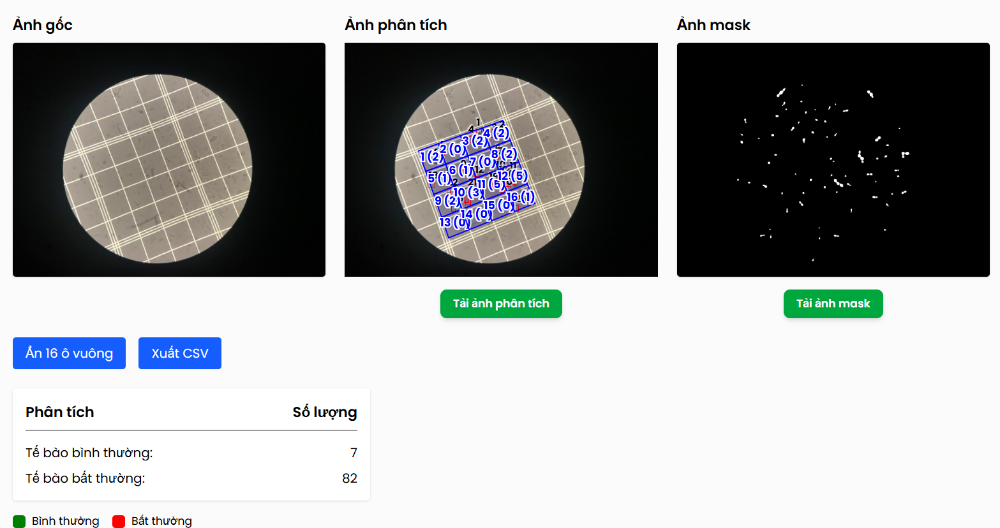

Hệ thống tự động phân tích nấm men trong môi trường Ethanol

Mô tả dự án
Đây là một hệ thống web ứng dụng trí tuệ nhân tạo cho việc phân đoạn và phân tích tế bào nấm men trong môi trường ethanol. Dự án được thực hiện trong thời gian thực tập tại Phòng thí nghiệm Tin sinh học (Bioinformatics Lab), Đại học Bách Khoa Hà Nội, dưới sự hướng dẫn của TS. Nguyễn Hồng Quang.
Vai trò và đóng góp
- Phát triển mô hình deep learning (U-Net) để phân đoạn (segment) các tế bào nấm men từ ảnh hiển vi.
- Thiết kế thuật toán, phát triển mô hình để đếm và gán các tế bào nấm men vào đúng các ô trong buồng đếm 16 ô.
- Trích xuất các thông số hình thái của từng tế bào (diện tích, chu vi, độ tròn) để phục vụ cho việc phân tích sâu hơn.
- Xây dựng REST APIs bằng FastAPI để cung cấp khả năng dự đoán của mô hình và đóng gói ứng dụng bằng Docker.
Công nghệ sử dụng
- PyTorch
- OpenCV
- FastAPI
- Docker
- NumPy
- scikit-image